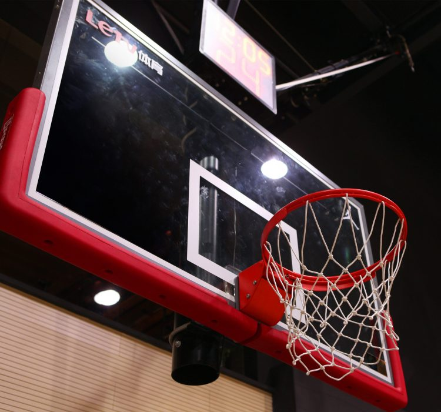
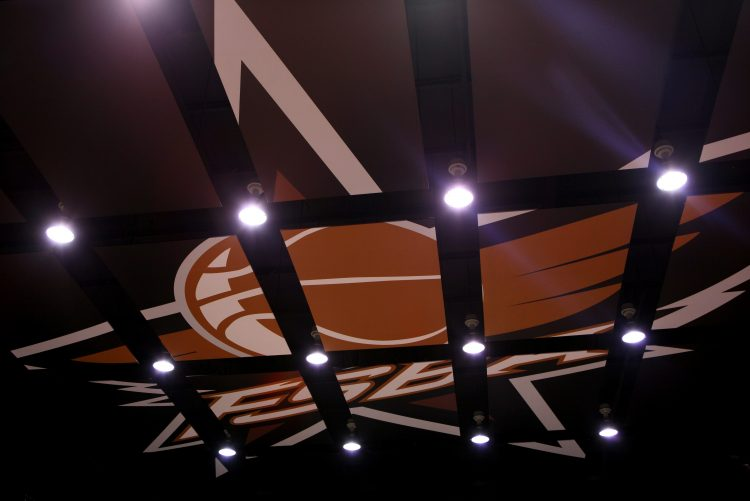

FLY SPORTS BASKETBALL ARENA（简称FSBA）球馆位于长宁区绥宁路628号，是上海第一家高端篮球馆。假如说，你和你的朋友们想回答“在国内 NBA 级别的篮球馆打球是怎样的一种体验？”。那么，FSBA 绝对是你们在沪上唯一的选择。整个 FLY SPORTS BASKETBALL ARENA 的设施是以 NBA 场馆的标准而打造，不夸张地说，FSBA 可能是国内硬件设备级别最高的专业篮球馆之一。同时，全新的FLY SPORTS BASKETBALL ARENA 邀请了多位国内外知名球馆设计师进行联合设计，无论是外部还是内部装饰都呈现出强烈的NBA元素，营造出一种极致的酷感。
作为一家具有纯正美式篮球血统的高端篮球馆，球场的地板选用了来自美国的顶级运动地板品牌——CONNOR(柯勒运动地板)。新地板的最大特色在于选用了上等的加拿大枫木材料，具有高效的防滑功能。此外，在地板的底层铺设了一层顶级气垫材料，采用了国际体育巨头NIKE公司最新研发的技术，大大降低了因激烈运动而导致脚部和膝盖的损伤可能性，最大程度的保护了球员的身体安全。

FLY SPORTS BASKETBALL ARENA 的另一大特色则是选用了全球篮架领导者GARED公司的G牌篮架。革命性的气压悬挂安装技术将篮板直接从球场顶部悬挂下来，整个安装过程由GARED美国总部的专业技术人员现场完成，确保了篮架的稳定性和安全性。而篮架智能可调节高度系统的使用，使篮板的高度满足任何篮球人群的需求。

此外，球场采用了全新的进口灯光系统，使现场的照明亮度达到了NBA比赛的标准。而现场特别安装的6个高清摄像头，将记录下球员们打球的每一个精彩瞬间，并将这些视频分享给球员和朋友们。 而作为这座球馆的实际投资者——FLY SPORTS GROUP的理念就是向广大篮球爱好者提供最顶级的篮球体验和专属的配套服务。FLY SPORTS GROUP也将借着其在中国的第一家顶级篮球馆的诞生之际，正式宣布进军中国的体育场馆运营领域，并以上海为基地市场，针对不同的篮球人群和需求，在未来3年实现一区一馆的目标，并将这一计划逐步覆盖到全国。
在与虎扑合作成为智慧运动场后，FSBA 不再只是一个普通的运动场所。在这里，你的比赛不仅仅会被视频直播，更有完善的技术统计伴随全场。在这里，精彩的瞬间不再只能在脑海中一遍遍重放，不再只靠口口相传，而是一帧帧地站在你的集锦之中。
(编辑：测试)